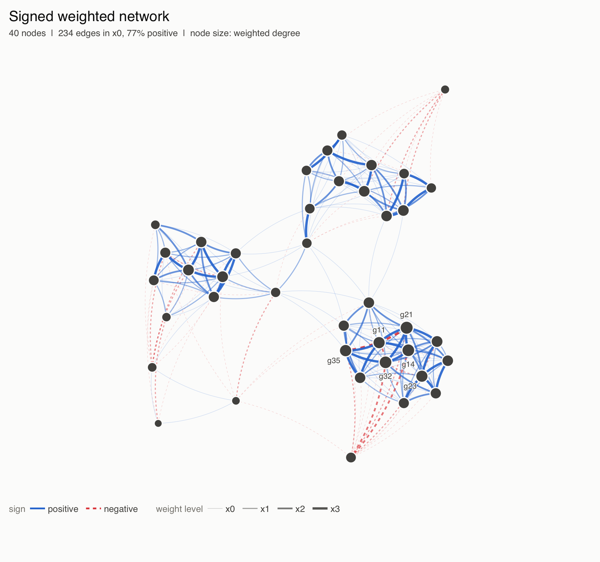
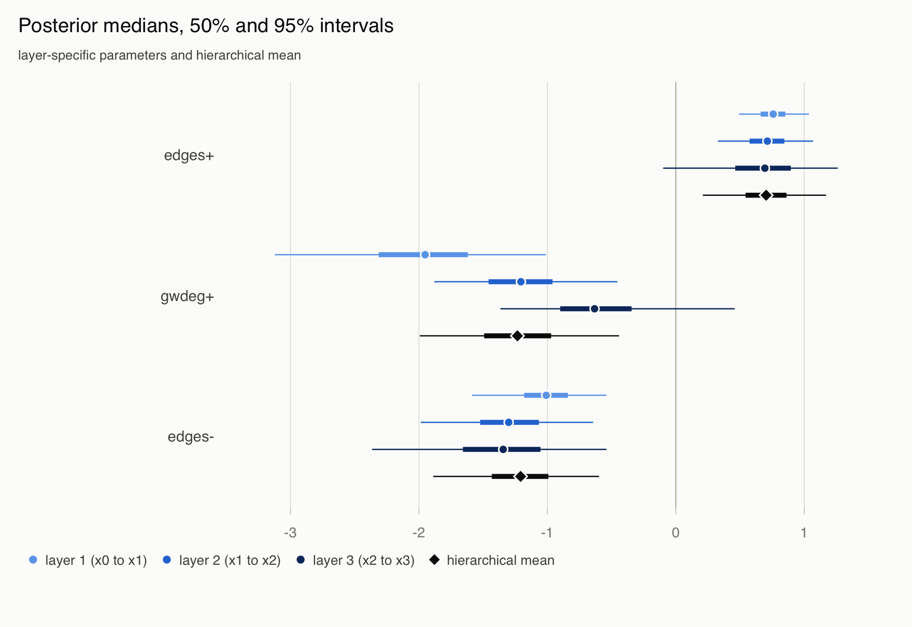
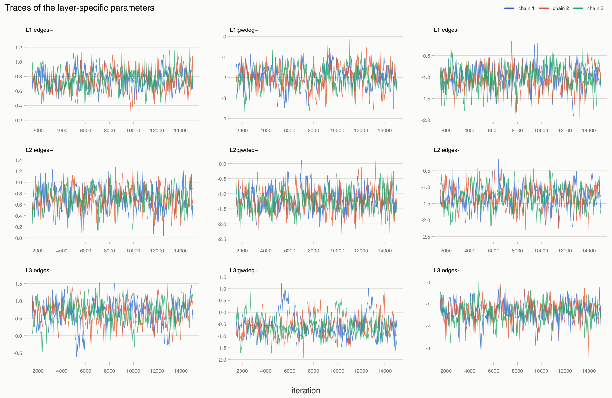
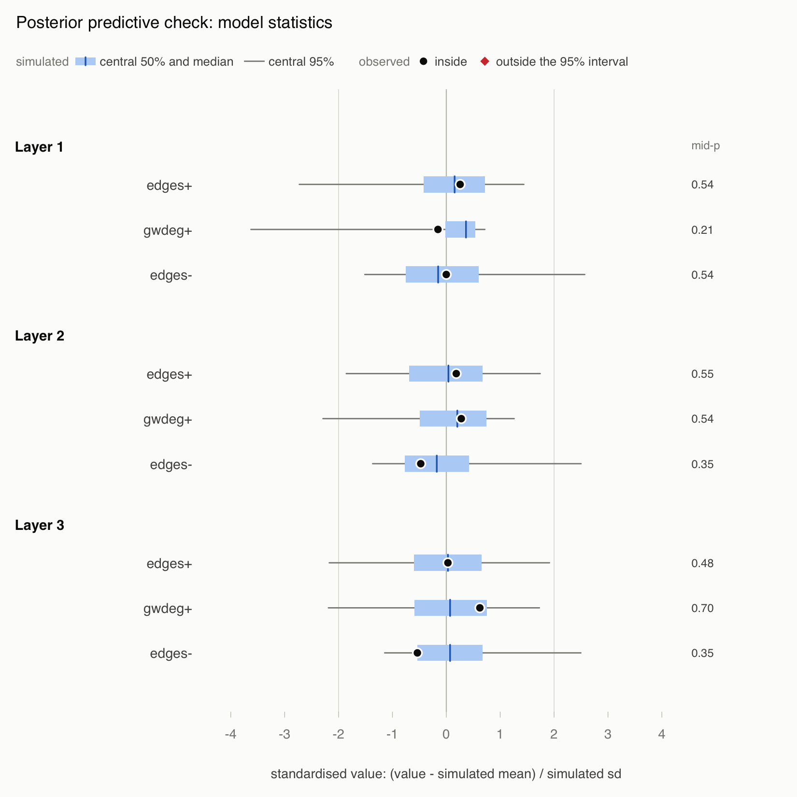
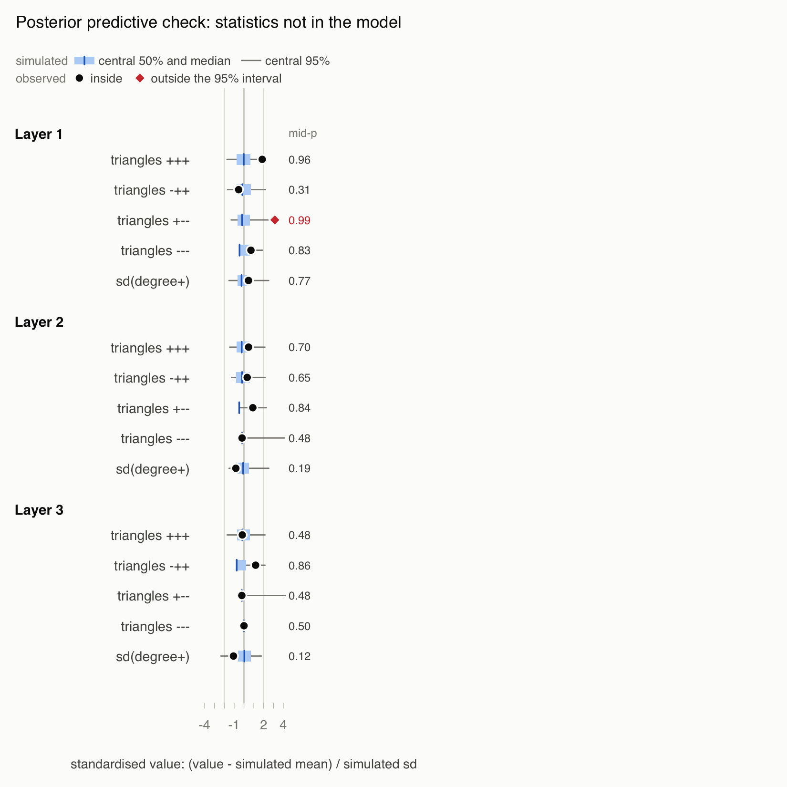
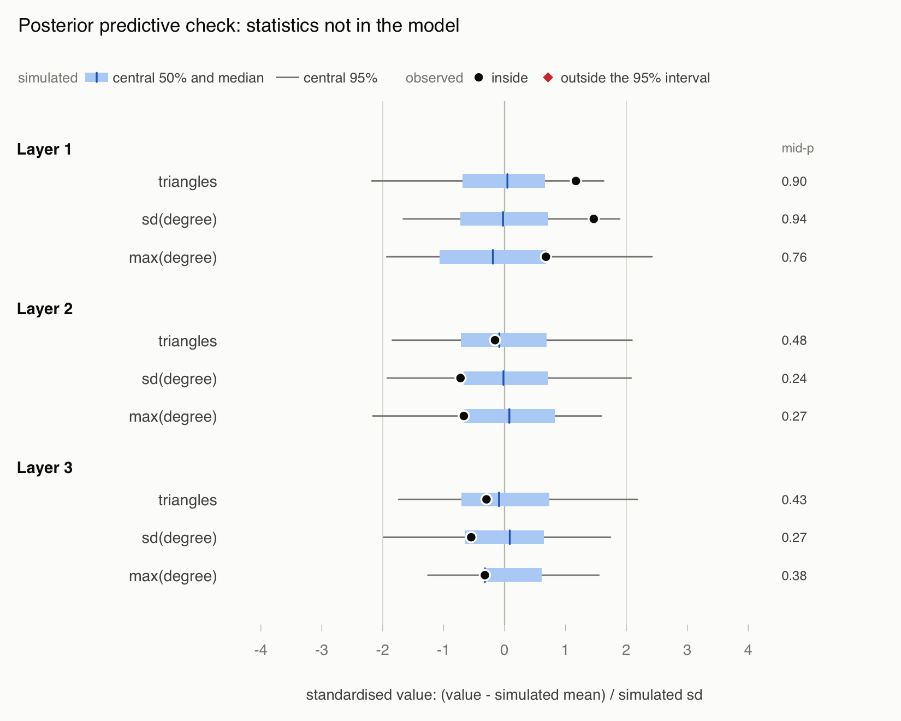

Bergm.ws: Bayesian multi-layer dissolution ERGMs for weighted and signed weighted networks
Authors
Alberto Caimo
Isabella Gollini
Multi-layer dissolution ERGMs
A weighted network with weights \(w_{ij}\) is cut into nested binary layers by thresholds \(t_0 < t_1 < \dots < t_K\): \[
x_k = \{ij : w_{ij} \ge t_k\}, \qquad x_0 \supseteq x_1 \supseteq \dots \supseteq x_K .
\]
Each transition \(x_{k-1} \to x_k\) is modelled by an exponential random graph model whose statistics \(s(x_k)\) are computed on layer \(k\), conditionally on the observed lower layers \(\tilde x_{k-1}\).
Layer \(k\) can only keep edges of the observed layer below it, so \(\varphi_k\) describes which edges survive the \(k\)-th threshold: a dissolution process across the weight scale. When \(x_0\) also carries signs \(z\) the signs are modelled jointly with the layers, and the statistics \(s(z, x_k)\) can distinguish positive and negative edges: \[
p(z, x_{1:K} \mid \tilde x_{0:K-1}, \varphi_{1:K}) \propto
\exp\left\{\sum_{k=1}^K \varphi_k^\top s(z, x_k)\right\}
\prod_{k=1}^K 1\{x_k \subseteq \tilde x_{k-1}\}.
\]
In both cases the layer parameters are partially pooled by a hierarchical prior, \[
\varphi_k \mid \mu, \Sigma \sim \mathcal{N}(\mu, \Sigma), \quad
\mu \sim \mathcal{N}(\mu_0, \Sigma_0), \quad \Sigma \sim \mathrm{IW}(\nu_0, S_0),
\] so that \(\mu\) is the effect common to all layers and \(\Sigma\) measures how much the layers differ. bergm_w() fits the model without signs and bergm_ws() the model with signs; both sample the posterior \(\pi(\varphi, \mu, \Sigma \mid y)\) with the adaptive exchange algorithm of Section 5.
The code below uses the names of the notation:
notation
meaning
code
\(w_{ij}\), \(t_0, \dots, t_K\), \(z_{ij}\)
weights, thresholds, signs
w, t_k, z
\(y = (z, x_{0:K})\)
observed signed network
y
\(x = x_{0:K}\)
observed network without signs
x
\(s(z, x_k)\), \(s(x_k)\)
statistics, as an ergm.multi formula
s, s_x
\(\mu_0, \Sigma_0, \nu_0, S_0\)
hyperparameters
mu0, Sigma0, nu0, S0
\(\pi(\varphi, \mu, \Sigma \mid y)\)
posterior
post, post_x
\(\varphi_k\), \(\mu\)
layer parameters, hierarchical mean
phi, mu
\(y'\)
auxiliary network of the exchange algorithm
(internal)
\(y^{\mathrm{rep}}\)
networks simulated from either prior or posterior predictive distribution
y_prior, y_rep, x_rep
2. Simulated data
toy_ws is a network on 40 nodes simulated with ws_simulate(n = 40, seed = 33):
The share of positive edges grows with the weight, as it often does in real co-expression networks: strong interactions are mostly positive.
xy <-ws_layout(y)plot(y, layout = xy)

3. Weighted signed networks: bergm_ws()
Model specification
The statistics are written as an ergm.multi formula. The layers are called x_1, x_2, x_3 and the signs z, so (z & x_k) selects the positive edges of layer \(k\) and (!z & x_k) its negative edges. Every layer has the same three statistics:
The same formula can be written once, as a template in which x_k stands for every layer: ~ L(~edges, ~(z & x_k)) + L(~gwdegree(0.5, fixed = TRUE), ~(z & x_k)) + L(~edges, ~(!z & x_k)).
ws_model() checks the formula before anything is fitted: every statistic must use exactly one layer, the statistics must be grouped by layer (all those of x_1 first) and every layer must have the same number of statistics, because the hierarchical prior pools the \(j\)-th statistic of all layers. A formula that breaks one of these rules is rejected with an explanation, and statistics that are zero in the data or whose change statistics are nearly collinear are reported.
The two edge terms set the baseline log-odds that a positive or a negative edge of layer \(k-1\) survives into layer \(k\). The geometrically weighted degree term describes how the surviving positive edges are spread over the nodes: a negative coefficient means that they concentrate on nodes that already have many positive edges, a positive one that they are spread evenly.
Hierarchical prior (p = 3 statistics per layer)
mu ~ N(mu0, Sigma0), Sigma ~ inverse-Wishart(nu0 = 12, S0)
prior mean of mu0: 0.00, 0.00, 0.00
prior sd of mu: 1.73, 1.73, 1.73
expected between-layer sd, sqrt(diag(E[Sigma])): 0.35, 0.35, 0.35
These are the default values: \(\mu \sim \mathcal{N}(0, 3I)\) and \(\Sigma \sim \mathrm{IW}(p + 9, I)\), so that the expected between-layer standard deviation is about 0.35. With few layers \(\Sigma\) is informed mostly by the prior, which acts as a moderate shrinkage of the layers towards each other. A prior predictive check shows the networks the prior considers plausible:
The same fit is obtained in one call with bergm_ws(y, s, ...); building the model first lets us look at it and at the prior before fitting. The four chains start from dispersed points, adapt their proposal during the burn-in and then share the same frozen proposal.
The fit took 116 seconds. The largest \(\hat R\) is 1.017 and the smallest effective sample size 242, which is adequate for this example. Delayed acceptance needed an auxiliary network for only 45% of the proposals.
Results
The posterior means of \(\varphi_k\) (one row per layer) and of \(\mu\):
phi <-coef(post)mu <-coef(post, what ="mu")round(phi, 2)
The interval plot shows every effect in every layer next to the hierarchical mean:
plot(post, type ="intervals")

Positive edges are more likely than negative ones to survive into the next layer in every layer. The degree effect of the positive edges is negative (posterior means -1.98, -1.20 and -0.59 in layers 1 to 3): the positive edges that survive concentrate on nodes with many positive edges, which in this network are the cores of the modules. The effect weakens as the threshold rises, and the hierarchical prior pulls the three layers towards the common mean.
plot(post, max_points =500)

The four chains overlap after the burn-in.
Posterior predictive checks
Posterior predictive networks are compared with the observed one on the model statistics and on statistics the model does not contain: the four kinds of signed triangles and the spread of the positive degrees in every layer.
y_rep <-ws_predictive(post, nsim =200, seed =2, verbose =FALSE)plot(y_rep, what ="model")

plot(y_rep, what ="gof")

The model describes how many positive and negative edges survive and how they are spread over the nodes, but contains no term for triangles, so statistics of triangle closure are where it is most likely to fail. A natural extension adds a shared-partner term to every layer, for instance gwespL(0.5, fixed = TRUE, L.base = ~(z & x_k), Ls.path = list(~(z & x_k), ~(z & x_k))) for positive triangles (labelled gwesp+++), usually with scale = "gwesp" so that its coefficient is comparable across layers.
Finally, ws_aux_check() compares auxiliary networks of the length used by the sampler with networks from chains 20 times longer, at the posterior mean:
ws_aux_check(post, seed =3)
Auxiliary chains of 6620 steps vs 20 times longer, at the posterior mean
(std_diff = difference of means in units of the long-chain sd; flagged if
|std_diff| > 0.25 and |z| > 2.77, Bonferroni over 9 statistics)
statistic mean_short mean_long sd_long std_diff z
L1:edges+ 113.290 113.660 9.154 -0.040 -0.286
L1:gwdeg+ 61.940 62.049 2.265 -0.048 -0.361
L1:edges- 15.390 15.470 3.500 -0.023 -0.152
L2:edges+ 62.270 61.220 7.567 0.139 1.039
L2:gwdeg+ 50.994 50.452 3.709 0.146 1.076
L2:edges- 4.420 4.650 2.222 -0.104 -0.755
L3:edges+ 32.070 32.280 4.660 -0.045 -0.329
L3:gwdeg+ 37.267 37.584 3.605 -0.088 -0.632
L3:edges- 1.600 1.500 1.115 0.090 0.596
No appreciable difference: the auxiliary chains are long enough.
4. Weighted networks (without signs): bergm_w()
When edges have weights but no signs, bergm_w() fits the model of Section 1 without \(z\) (Caimo and Gollini, 2020). The formula uses the layers x_1, …, x_K, or x_k in a template; any term can be applied to a layer with L(), for example L(~edges, ~x_k), L(~triangle, ~x_k), L(~gwdegree(0.5, fixed = TRUE), ~x_k) or L(~nodematch("module"), ~x_k), and shared partners with gwespL(0.5, fixed = TRUE, L.base = ~x_k, Ls.path = list(~x_k, ~x_k)). Setting \(t_0\) below the smallest weight makes \(x_0\) the set of all observed edges.
We use the weights of toy_ws and ignore the signs:
x <-ws_data(w, t_k, attributes = toy_ws$attributes)x
scale = "gwesp" multiplies the GWESP statistic by \(e^{-\alpha}\), so that its coefficient is the change in log-odds for an edge with many shared partners in every layer. Here the model is fitted in one call, which builds the model and the default prior itself; given signed data, bergm_w() uses only the weights.
The transitivity effect is positive in every layer: an edge with many shared partners is more likely to have a large weight. Without signs, the statistics outside the model are the number of triangles and the standard deviation and maximum of the degrees in every layer.
x_rep <-ws_predictive(post_x, nsim =200, seed =8, verbose =FALSE)plot(x_rep, what ="gof")

All observed values lie inside the central 95% of the posterior predictive distribution. The two analyses of toy_ws answer different questions: this one asks how the weights alone are organised across the layers, the signed analysis of Section 3 also asks how the signs of the edges relate to their weights.
5. The adaptive exchange algorithm
The normalising constant \(c(\varphi)\) of the multi-layer model on the observed supports is intractable, so the likelihood ratio of a Metropolis–Hastings step cannot be computed. The exchange algorithm (Murray et al., 2006; Caimo and Friel, 2011) simulates an auxiliary network \(y'\) at the proposed value \(\varphi'\); with \(y'\) in the acceptance ratio, \(c(\varphi)\) and \(c(\varphi')\) cancel and the likelihood ratio is replaced by \(\exp\{(\varphi' - \varphi)^\top (s(y) - s(y'))\}\). The auxiliary network is drawn by aux_iters steps of the ergm sampler started at the observed network (by default ten proposals per dyad-layer pair that can change, and at least 2,000); ws_aux_check() checks that this is long enough.
The basic sampler alternates an exchange step for \(\varphi\) with Gibbs draws of \(\mu\) and \(\Sigma\). Bergm.ws improves it in four ways, none of which changes the posterior.
1. Starting values and proposal from the Fisher information. The chains start at the penalised maximum pseudo-likelihood estimate, the mode of the logistic pseudo-likelihood times the Gaussian prior of \(\varphi\) (with \(\Sigma\) at its prior mean), which is finite even when a statistic separates the dyads. Two moment-matching Newton steps then move towards the posterior mode,
where \(\mathrm{E}_\varphi s\) and the Fisher information \(I_\varphi\) are the mean and covariance of n_info networks simulated at \(\varphi\), and \(P\) and \(m\) the prior precision and mean of \(\varphi\). The initial proposal covariance is \(B_0 = (I_\varphi + P)^{-1}\) and the initial scale \(2.38/\sqrt{2d}\) for \(d = Kp\) parameters: the usual random-walk scale, reduced by \(\sqrt 2\) because the exchange step adds noise of about the same size as the log-likelihood ratio.
2. Delayed acceptance. The score \(g = s(y) - \mathrm{E}_c s\) and information \(H = I_c\) at the starting value \(c\) define a Gaussian surrogate of the log-likelihood, \(\tilde\ell(\varphi) = g^\top(\varphi - c) - \tfrac12 (\varphi - c)^\top H (\varphi - c)\). Each proposal first passes a cheap test with the surrogate and the exact prior; only then is the auxiliary network simulated, and a second test corrects for the surrogate (Christen and Fox, 2005):
3. The hierarchical mean integrated out. When the layers move together, \(\varphi\) and \(\mu\) are strongly dependent and the plain Gibbs scheme is slow. Given \(\Sigma\), \(\mu\) is integrated out analytically, \[
\varphi \mid \Sigma \sim \mathcal{N}\big(1_K \otimes \mu_0,\;
I_K \otimes \Sigma + J_K \otimes \Sigma_0\big),
\] with \(J_K\) the \(K \times K\) matrix of \(1\)’s. The exchange step uses this prior (collapse_mu = TRUE); \(\mu\) is then drawn from \(\mathcal{N}(m_\mu, S_\mu)\) with \(S_\mu = (\Sigma_0^{-1} + K\Sigma^{-1})^{-1}\) and \(m_\mu = S_\mu(\Sigma_0^{-1}\mu_0 + K\Sigma^{-1}\bar\varphi)\), and \(\Sigma\) from \(\mathrm{IW}(\nu_0 + K, S_0 + \sum_k (\varphi_k - \mu)(\varphi_k - \mu)^\top)\): a partially collapsed Gibbs sampler (van Dyk and Park, 2008).
4. Adaptation in three phases. During the burn-in the proposal covariance is re-estimated as \(0.95\,\widehat{\mathrm{Cov}} + 0.05\,B_0\) from the second half of the chain’s history (Haario et al., 2001), and the scale is tuned towards an acceptance rate of 0.234. With several chains (pool_adaptation = TRUE), each chain adapts on its own during the first three quarters of the burn-in; the within-chain covariances are then averaged and given to every chain, which only tunes the scale during the last quarter; finally the scale is set to the geometric mean over the chains and the proposal is frozen. The retained draws of all chains come from the same Markov kernel. With update = "layer" the step is repeated for each layer in turn, with one auxiliary network per layer.
Technical improvements over the basic exchange sampler
The comparison below fits a signed model of toy_ws with 15 parameters,
with scale = "gwesp", 4 chains of 4,000 iterations (1,000 of burn-in) on 2 cores, adding the improvements one at a time, for two seeds. All four samplers share the starting values and initial proposal of improvement 1. These runs take about half an hour, so their results are stored with the package; the script that produced them is system.file("scripts", "precompute_vignettes.R", package = "Bergm.ws").
sampler
seconds
simulated
acceptance
median ESS
min ESS
max Rhat
ESS/min
basic
268
100%
0.23
92
52
1.47
20.6
+ delayed acceptance
113
39%
0.26
61
37
1.49
32.5
+ mu integrated out
113
37%
0.20
101
63
1.40
53.5
+ pooled adaptation
124
41%
0.23
93
43
1.28
45.2
Delayed acceptance simulates a network for fewer than half of the proposals and raises the effective sample size per minute by a factor of 1.6; integrating out \(\mu\) adds a further factor of 1.6. Pooling the adaptation does not change the efficiency much, but it gives all chains the same kernel and, in these runs, the lowest \(\hat R\) (these values are above 1.05 because the runs are deliberately short so as to compare samplers).
Practical advice
Write the formula with the same terms in the same order in every layer (a template with x_k does this automatically), and look at the model before fitting: nearly collinear statistics are better dropped than fitted with longer chains.
Use at least four chains and look at \(\hat R\) and the effective sample sizes; with cores > 1 the chains run in parallel.
argument
when/how to change it
n_iter, burnin
increase until \(\hat R < 1.05\) and the effective sample sizes exceed a few hundred
cores
set to the number of chains if the machine allows
aux_iters
increase if ws_aux_check() finds differences
update
"layer" when the layer parameters are nearly uncorrelated a posteriori (see summary(post)$corr)
delayed
do not switch it off!
dispersion
larger values give a stricter convergence check
References
Caimo, A. and Friel, N. (2011). Bayesian inference for exponential random graph models. Social Networks, 33, 41–55.
Caimo, A. and Gollini, I. (2020). A multi-layer exponential random graph modelling approach for weighted networks. Computational Statistics & Data Analysis, 142, 106825.
Caimo, A., Dalena, P, and Gollini, I. (2026). Multi-layer dissolution exponential-family models for weighted signed networks.
Christen, J. A. and Fox, C. (2005). Markov chain Monte Carlo using an approximation. Journal of Computational and Graphical Statistics, 14, 795–810.
Haario, H., Saksman, E. and Tamminen, J. (2001). An adaptive Metropolis algorithm. Bernoulli, 7, 223–242.
Krivitsky, P. N., Koehly, L. M. and Marcum, C. S. (2020). Exponential-family random graph models for multi-layer networks. Psychometrika, 85, 630–659.
Murray, I., Ghahramani, Z. and MacKay, D. (2006). MCMC for doubly-intractable distributions. Proceedings of the 22nd Conference on Uncertainty in Artificial Intelligence, 359–366.
van Dyk, D. A. and Park, T. (2008). Partially collapsed Gibbs samplers: theory and methods. Journal of the American Statistical Association, 103, 790–796.